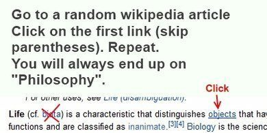
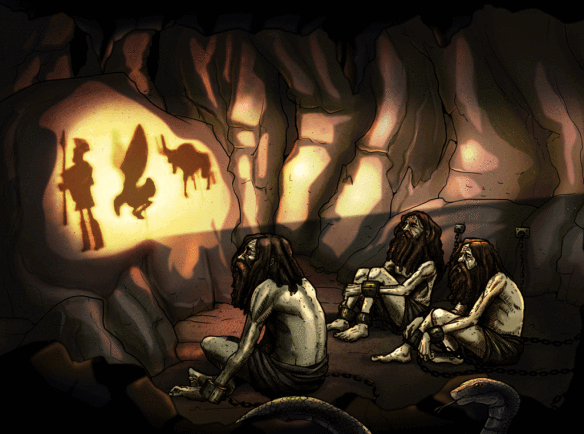

Beginnings of Philosophy
Table of Contents
1. What is Philosophy
- Philosophy is philo + sophia = love for wisdom
- Academic study of anything
- But later, questions of empirical natures came to be known as science,
- while philosophy concrened about the way to think, or thinking about questions.
2. Thales of Miletus
- c. 620 BCE
- Considered as the first philospher
- was interested in mathematics, history, science, engineering, geography
- at least in western civilization
2.1. Thale's theorem
- Discovered the Thale's theorem. (right angle opposite to diameter is a right angle)
2.2. He was smart
- predicted weather and made a lot of money
- understood similar triangles and right triangles
and what is more, used that knowledge in practical ways. The story is told in Diogenes Laërtius (loc. cit.) that he measured the height of the pyramids by their shadows at the moment when his own shadow was equal to his height.
2.3. Natural Philosophy
- first person to investigate on the originating substances of matter and thus the founder of natural philosophy
- believed everything is made up of water
3. Branches of Philosphy
- Metaphysics (study of nature of reality)
- Epistemology (study of knowledge) (Descarte's : I think therefore I am)
- Value Theory
- Ethics (nature of human conduct)
- Aesthetics (nature of beauty)
- Logic (should be considered as a tool for Philosophy)
3.1. Meme

4. History of Philosophy (Western)
- Ancient
- Pre-Socratic (~600 BCE)
- Classical: Socrates (~ 470 - 400 BCE), Plato, Aristotle
- …
- …
- Modern (17th-18th century)
- Contemporary (nowadays)
5. Pre-Socratic Philosophers
- Thales
- Zeno (pardoxes)
- Democritus (atomism)
- Shape determines property (iron atoms are solid with hooks, water atoms are slippery)
So they delt mostly with metaphysics
6. Socrates (c470 – 399 BC)
- "I know that I know nothing"
- Oracle's prophecy and the "Socratic Method"
- His death and life of virtue
father of western philosophy
It is said that following a visit to the Oracle of Delphi he spent much of his life questioning anyone in Athens who would engage him, in order to disprove the oracular prophecy that there would be no man wiser than Socrates
Once Socrates realized that the reason he was wiser than everyone is because he can admit that he knows nothing, he set out to correct the citizens of Athens and fix their assumptions and preconceptions.
he just started accosting anyone unfortunate enough to not look busy. I'm wondering if you can help me get to the bottom of something…what is justice? or what is virtue? people would give their, obviously flawed response, and he would just lay into them…questioning them pointing out contradictions or exceptions and eventually getting to a place where the person was either angry at him because he made them feel stupid or angry at him because he wouldn’t leave them alone. either way they were angry.
Socrates wasn’t saying what he was saying to try to get the charges dropped… he was saying what he was saying with the same motives he had for doing everything else in his life…
to live a "good" and virtuous life.
He was one of the first philosophers to ask…what is a "good" life? and in his opinion, a good life was getting… a sort of "peace of mind"… as a result of doing the right thing, as opposed to doing things simply because society tells you its a good idea. He didn’t agree with Protagoras and most of the sophists who believed morals were relative
- Unlike the pre-socratics he aimed to study human things: the good life, justice, beauty, and virtue.
7. Plato
- Student of Socrates and influenced by Pythagoras
- yes the Pythagoras of the Pythagoream theorem
- and the term Philosopy was coined by Pythagoras
They saw these mathematical proofs as the way the universe could be understood, or as they put it, number is the ruler of all forms.
- founder of Platonist school of thought
whatever we know about socrates, it is mostly from the writing of Plato
- Socrates didn't write much books if any
- Plato's entire body of work is believed to have survived intact for over 2,400 years.
- Plato's Academy
- Metaphysics: The theory of Forms
7.1. Theory of Forms (The allegory of cave)

8. Aristotle
- Student of Plato
- father of biology
- Plato was an rationalist whele Aristotle was in empiricist and didn't belive in world of forms
- Had a theory on the best way to live
9. In the Eastern World
- Daoism (6th BCE)
- Buddhism (6th to 4th BCE)